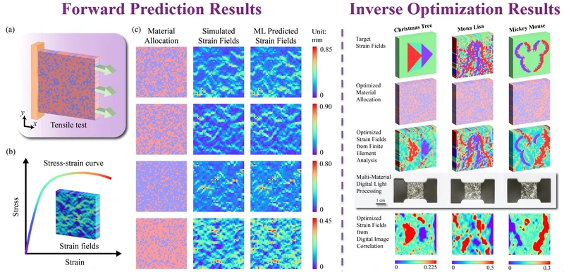
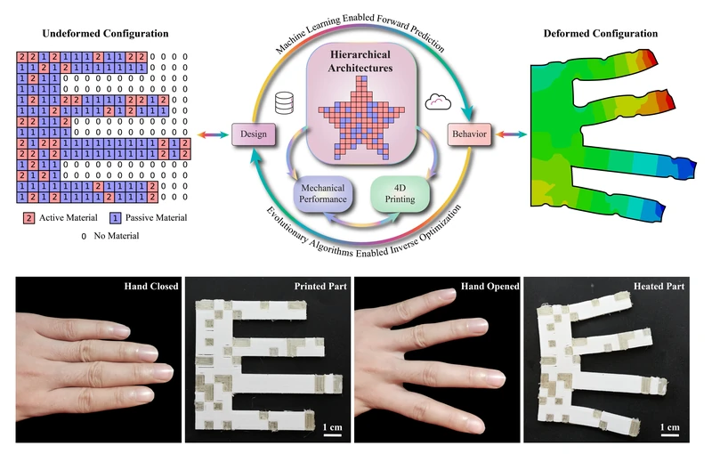
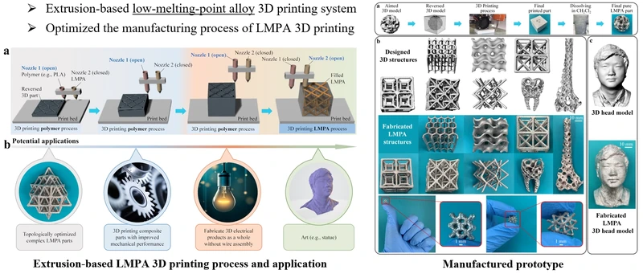
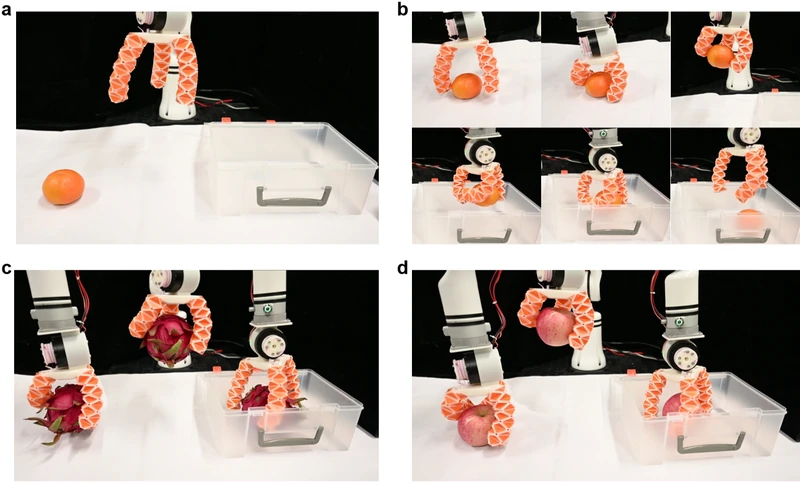

AI-powered material & metamaterial discovery
Learning structure–response relationships and using optimization to search for architectures that produce target shapes, strain fields, stiffness, or energy-absorption behavior.
Research
My current work co-designs algorithms, material architectures, and manufacturing processes for adaptive structures and soft robots. My long-term vision is to connect scientific reasoning, simulation, fabrication, and experiments in a governed, evidence-grounded loop.
Central question
The research combines AI-assisted design, adaptive materials, computational mechanics, and multimaterial manufacturing. Rather than optimizing one component in isolation, it treats geometry, material distribution, fabrication, and physical response as a connected system.
Research foundation
Each pillar moves between computation and experiment, with manufacturability and physical validation built into the research process.
Learning structure–response relationships and using optimization to search for architectures that produce target shapes, strain fields, stiffness, or energy-absorption behavior.
Developing multimaterial 3D/4D printing processes for metal–polymer structures, ceramics, lightweight molds, and digitally controlled fabrication.
Combining origami-inspired geometry, hard–soft material coupling, and adaptive actuation to create compliant mechanisms with useful physical intelligence.
Interactive research lab
Scroll from an AI-designed metamaterial lattice to multimaterial fabrication and an adaptive origami-inspired soft gripper.
Published research
Four representative studies show the recurring loop: define a physical target, model the response, optimize the architecture, fabricate it, and validate the result.

01 · AI + mechanics

02 · Programmable 4D materials

03 · Intelligent manufacturing

04 · Bio-inspired robotics
Measured outcomes
Selected peer-reviewed studies quantify how computational design and advanced manufacturing translate into material efficiency and reusable protection.
Stress-guided lightweight sacrificial molds compared with conventional cube-shaped molds.
View studyReusable compression-induced stretching lattices maintained stable hysteresis with negligible residual strain.
View studyLow-melting-point alloy/polyurethane auxetic foam compared with non-auxetic polyurethane foam.
View studyCurrent work · manuscripts under review
These projects are ongoing and are listed separately from peer-reviewed publications.
Multimaterial topology optimization across macro- and multiscale architectures for prescribed thermal deformation patterns.
Status · Manuscript under review
Machine-learning-enabled search across energy absorption, deformation mode, and impact-force objectives in disordered architectures.
Status · Manuscript under review
A crayfish-inspired internal-soft/external-stiff architecture for rapid, high-load, and dexterous robotic tasks.
Status · Manuscript under review
Geometry-aware surrogate modeling and multi-objective optimization balance electrical power and mechanical stress, followed by physical validation in a wireless sensing system.
Status · Manuscript under review
A smart-manufacturing framework that connects computational intelligence with material embodiment, physical interaction, and closed-loop learning.
Status · Manuscript under review
Long-term vision · next 5–10 years
The goal is not free-form agents exchanging ideas. It is a stateful scientific workflow in which every hypothesis, model, geometry, experiment, claim, and failure remains traceable—and where consequential decisions retain human oversight.
A structured record of objectives, tasks, artifacts, evidence, claims, failures, and decision history keeps the research lifecycle coherent.
Literature, mechanism, geometry, simulation, optimization, fabrication, experiment, reviewer, and writing roles operate on shared structured artifacts.
Permissions, traceability, quality gates, rollback, evidence checks, reproducibility, and human approval bound what the system can do.
Generative and physics-informed models for mechanical, thermal, acoustic, optical, and electromagnetic architected materials.
FDM, DLP, DIW, and microfabrication linked with new materials, in-situ sensing, defect detection, and process control.
Co-design of morphology, material, actuation, sensing, and control using differentiable simulation and learning.
Reliable autonomous science requires governance, not only intelligence.
Work together
Collaboration is welcome across mechanics, AI, materials, additive manufacturing, soft robotics, and scientific automation.
Discuss a project